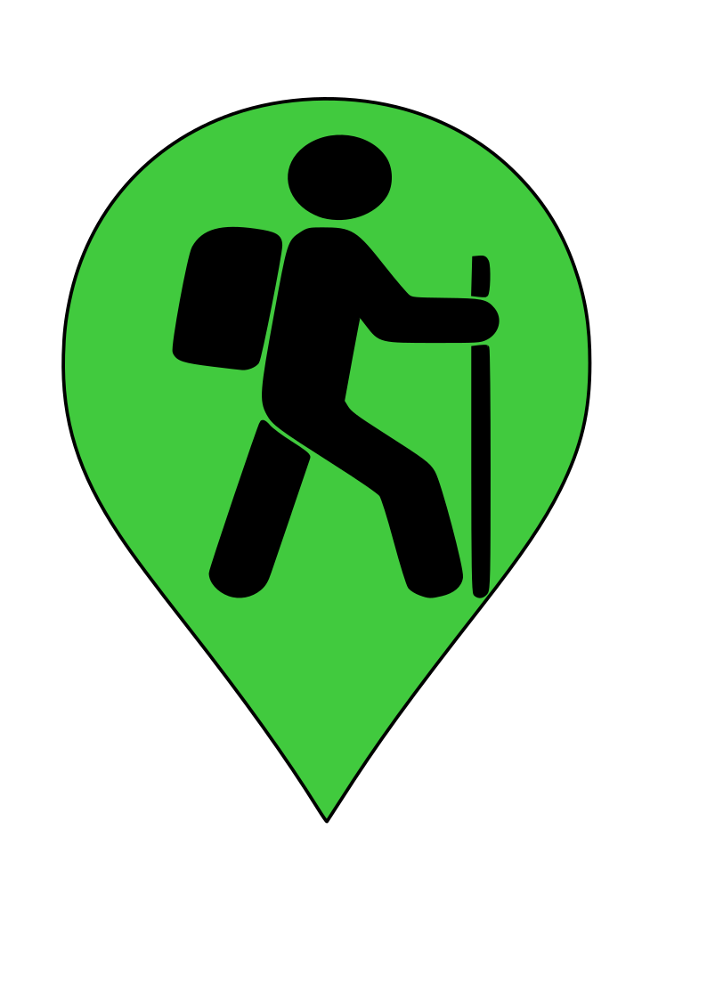
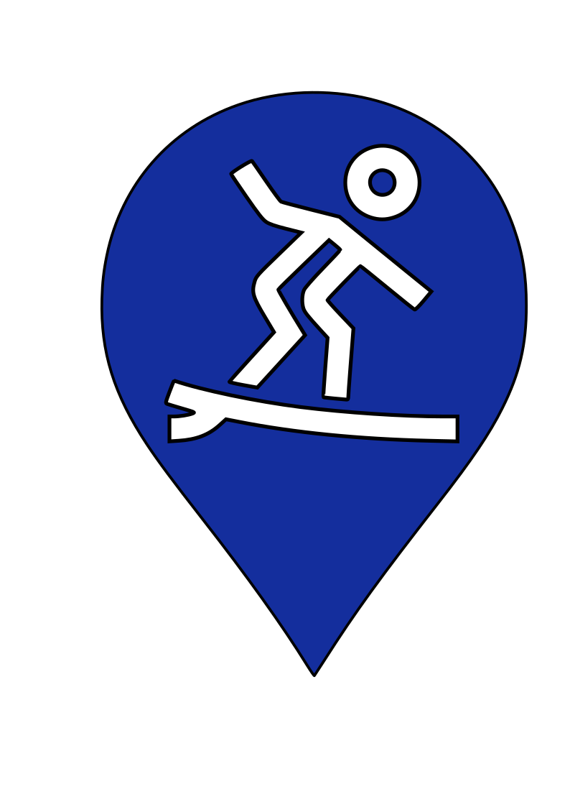
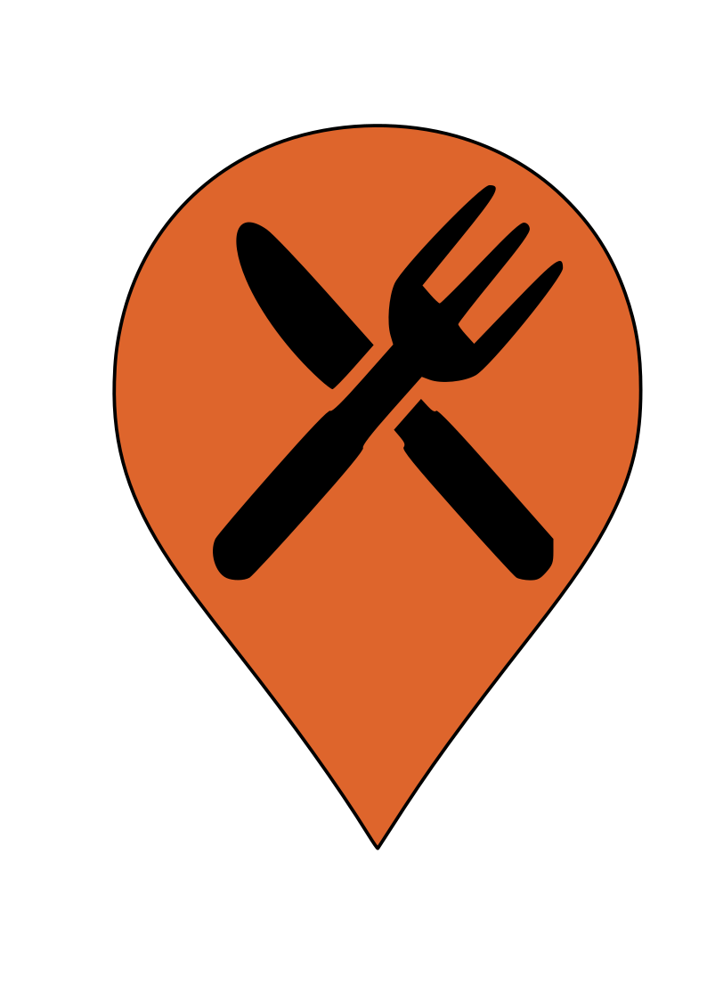
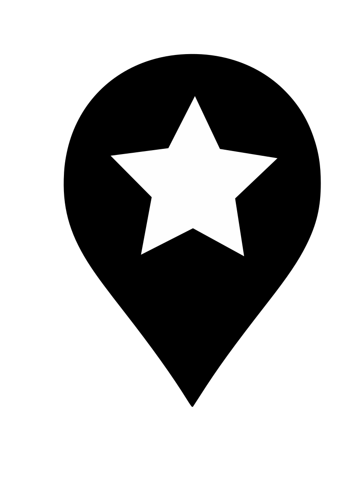

Maui Recommendations

Hikes

Surf

Food

Other
West Maui Mountains
- Waihe'e Ridge Trail
- 5 mi out n back
- Beautiful ridge views, I just DO NOT recommend when rainy/muddy.
- Iao Valley State Park
- Varied lengths
- Beautiful area to learn about ahupua'as, swim in the river, and/or hike around.
- There's some established hikes, but it's also fun to just walk up the river till you find a place to hang/swim.
- Lahaina Pali Trail
- 5 mi between east and west trail heads
- Hike up to the wind turbines and get an amazing ocean view the entire way.
- Do it as an out n back, or take two cars to end at the west trail head.
Hana Side
- Twin Falls
- Waterfall/river hike in Haiku, on the way to Hana
- One main out n back trail, and many different waterfall side quests. Plan for many hours here, it's a great spot to hike, swim, and hang.
- Parking's no longer free and is super strict unfortunately.
- Bamboo Forest
- Usually pretty rainy and wet, but it's a fun spot to romp around.
- Hana Highway Lavatube
- Fun stop along the Hana drive if you can find parking here.
- There's lava tubes to explore and a river/waterfall to hike up as well.
- Wai'anapanapa Coastal Trail
- Beautiful coastal trail in one of my favorite state parks.
- There's a couple blowholes too!
- Warning - parking reservations are now requried.
- Waimoku Falls
- 3.4 mile out n back
- Incredible trail through bamboo forests and rainforest, up to a big 'ol waterfall.
- It's technically in the Haleakala National Park, so there's an entrance fee. If you visit Haleakala Natn'l Park you can use the same pass here within 72 hours!
Up Country
- Waihou Spring Forest Reserve - 2-3 mi
- Lush forest loop with an optional side quest into a gulch with "lava" tubes (they're actually old irrigation tunnels, but calling them lava tubes is more fun).
- My fourth grade class planted to koa tree at the top of the gulch trail!
- Haleakala Crater
- Hiking the crater is a must in my opinion.
- One classic route is the out n back into the crater called Keonehe'ehe'e (Sliding Sands) which takes you from the very top into the center of the crater. You can take it as far as you'd like.
- Another option is continuing along the crater trail out the west side and finishing up some switchbacks at the Halemau'u trail head. This one is a full 12 mi, and is one of the most incredible hikes I've ever done. I wish I could erase my memory and hike it for the first time again.
- Stop at the Holua Cabin part way through for a pee break and lunch.
- NOTE: this is point-to-point so you'll need two cars, or you'll need to hitchhike back to the top at the end.
- If you have a guide, you can also find the lava tube entrances near the Holua Cabin which are an exciting way to test your claustrophobia.
- The crater also has many other side quest hikes, but I haven't done them all.
Wailea Side
- La Perouse (King's Highway)
- Out n back over the last lava flow on Maui.
- Lots of coves along the way to hang and swim.
- Great snorkling!
West Side
- Thousand Peaks (Ukemehame)
- Longboard break with lots of little peaks. Also has a parking lot with porta potties.
- Lefts
- Longboard break with an obvious left (obviously).
- Olowalu
- Mostly a longboard spot, but do NOT pass the chance to bring a shortboard here on a good south swell.
- Launiupoko
- Love this spot so much I'll go even when it's trash.
- Longboards recommended, and be ready to see some turtles!
- Super cute grassy park too, with real bathrooms and a *shower*.
- This is an awesome spot to hang for awhile, have a BBQ with your people, and pop in-n-out for surf sessions.
- If you go out, just be weary of the shallow reef!
- Breakwall (Lahaina Harbor)
- Where I grew up surfing! Solid all-day longboard spot, just be ready to manuver around surf schools.
- As of Spring 2025 the area is still closed from the fire.
- Park in Kamehameha Iki parking lot (if spaces), otherwise check street parking or the large lot across the street.
- S-Turns (Pohaku)
- Great spot for your high volume shortboard on a south swell. Otherwise grab the trusty log.
- It never seems crowded but that might be due to it's sharky reputation (I haven't seen any but don't say I didn't warn you).
- Park in Pohaku lot.
- Honolua
- I've actually never been but it's a famous right on Maui and comes highly recommended.
- I'm also unsure how one gets down the cliff to the beach break. This advice is a "get what you paid for" situation.
North Side & Hana
- Kahului Harbor
- Never had an epic day here, but I've heard it can happen.
- You can choose the windy trash outside the harbor, or the more-sheltered trash inside the harbor.
- Kanaha
- Windy as heck (world-famous for wind sports), but outside the reef can really go off (gun or log recommended, and a really good leash).
- The park has great parking, bathrooms, vball courts, and so many CATS!
- Ho'okipa
- Some are wary of the locals here, but just know your etiquette and they'll be the friendly bunch you've ever surfed with.
- Careful of the reef, it bites back.
- Oh, and DON'T TOUCH THE TURTLES.
- Jaws (Peahi)
- Worth a looksie if it's going off!
- Honomanu
- Only place I've surfed in Hana, and I spent more time fighting the current than surfing. But Shaun had fun!
- Four wheel drive (or close-enough) recommended for the road down.
Kihei & Wailea
- Maalaea Harbor
- Never surfed it, but I know it's a great shortboard spot on a good south swell!
- The Cove
- Don't be fooled by it's lake-like appearance; with the right attitude you can catch anything!
- La Perouse
- My dad says you can surf here ¯\_(ツ)_/¯
Up Country
- Haili'imaile General Store
- No longer a general store, it's now a top rated restaurant.
- A bit pricey, but definitely worth it!
- Polly's Mexican
- As far from Mexican as you can get, but absolutely solid place for good eats, frozen margaritas, and epic vintage surf footage.
- Casanovas
- Excellent pasta, pizza, and tropical cocktails (try the lilikoi martini if they have it!).
- There's also an attached cafe with great take out lunches.
- Komoda's Bakery
- Get there early, they run out fast! And they also have weird hours.
- Pukalani Suparette
- Best hot plate lunch up country, highly recommend if you need a quick bite.
- Serpico's
- Owned by the nicest family! Great pizzas/subs/pasta.
- The philly cheesesteak was a go-to of my brother's.
- Foodland Pukalani
- The poke! The spam musubis! The hot plate lunch! Foodland is a staple.
- Hot tip: go in the morning to get half-off yesterday's poke.
- Marlo's
- Exquisite, delicious, artisan pizzas.
- Order take-out and bring it over to the Aleworks balcony next door!
- Mahalo Aleworks
- Order takeout from Marlo's next door, then grab some brewski's (or ciders) on the balcony here. You can't beat that view.
- La Provence
- Never got food here but the french pastries are simply superb.
- Ocean Vodka
- Outdoor restaurant at a Vodka distillary with a well stocked kitchen, and live music.
- Drinks and food are great, but the view is the best part!
- Since it's outdoors, it can get a bit windy. Jacket recommended.
- Reservations also recommended
Paia
- Paia Fish Market
- Sooo good, but also soooo crowded.
- Cafe Des Amis
- Solid mediterranian, great tropical drinks, KILLER crepes.
- Flatbread Pizza
- Very popular; pizza is quite decent. Reservation recommended.
Waikapu
- Cafe O'Lei at the Plantation
- Incredible view and atmosphere, and food/drinks are spectacular.
Kihei & West Side
- Times Supermarket
- My go-to spot for fresh mochi. Although TBH it's good everywhere.
- Maui Pie
- The Chocolate Haupia (coconut) was my all time fav as a kid.
- South Maui Fish Co
- Food truck serving incredible fish tacos! It's quite busy, but soo worth the wait.
- Leoda's Pie Shop
- Super popular. Worth a stop if you're in the area.
Hana
- Hana Farms Roadside Stand
- This is a pizza restaurant, bakery, and roadside shop just at the entrace to Hana; probably one of the best restaurants in the area.
- It's part of a 7 acre farm which also creates a beautiful scenery/ambiance around the restuarant.
- The farm's fruits are sold at the shop, along with goods from local artisans!
- Get the banana bread and thank me later !!
Up Country
- Surfing Goat Dairy"
- Behind the scenes tour of some adorable goats and some killer cheese.
- There's also a cafe on sight for lunch!
- Kula Lavendar Farm
- Very peaceful and beautiful lavendar garden with a cafe and giftshop.
- Star Gazing
- Star gazing is excellent anywhere away from city lights, but Poli Poli is a great location for it.
- Poli Poli Disc Golf
- Beautifully-maintained course. A must if you're a disc-golfer.
- Be careful to not lose your disc in the dense foliage.
- Haleakala Crater
- Definitely a must-see if you're on-island. I also highly recommend watching the sunrise and/or sunset here.
Hana
- Wai'anapanapa State Park
- My favorite state park on Maui! Beautiful coast line, and so many fun hidden spots.
- If you can get a reservation, the cabins in this park are an insane deal.
West Side (ish)
- Maui Ocean Center
- To this day one of the best aquariums I've ever been to.
- No better place to learn about humpback whales and their annual migration patterns!
- There's also usually exhibits on ancient hawaiian life, and the restoration projects on Koho'olawe.
- Olowaly Petroglyphs
- Drive up a mostly dirt road, and park off to the side once you reach some rocky cliffs.
- Walk down the road and you'll see the petroglyphs in the cliff rocks (look closely, they're pretty pale).
- There aren't too many to see, but it's definitely worth a quick visit if you're driving by!
The Ocean
- Whale Watching
- If it's the season for whale watching, this is a 100000% must.
- Molokini Snorkling
- You'll need to join a snorkling tour to get here, but it's some of the best snorkling off maui.